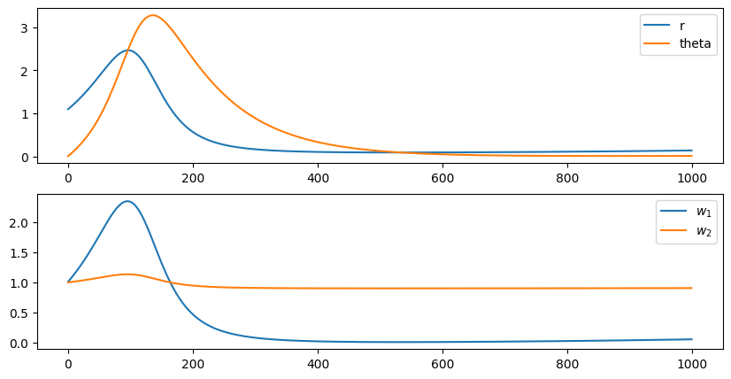

#!pip install ANNarchyBCM learning rule


The goal of this notebook is to investigate the Intrator & Cooper BCM learning rule for rate-coded networks.
\Delta w = \eta \, r^\text{pre} \, r^\text{post} \, (r^\text{post} - \mathbb{E}[(r^\text{post})^2])
Intrator, N., & Cooper, L. N. (1992). Objective function formulation of the BCM theory of visual cortical plasticity: Statistical connections, stability conditions. Neural Networks, 5(1), 3–17. https://doi.org/10.1016/S0893-6080(05)80003-6
We first import ANNarchy:
import numpy as np
import ANNarchy as ann
ann.clear()
ann.setup(dt=1.0)ANNarchy 4.8 (4.8.0) on darwin (posix).We will keep a minimal experimental setup, with two input neurons connected to a single output neuron. Note how the input neurons are defined by setting r as a parameter that can be set externally.
# Input
input_neuron = ann.Neuron(
parameters = """
r = 0.0
"""
)
pre = ann.Population(2, input_neuron)
# Output
neuron = ann.Neuron(
equations = """
r = sum(exc)
"""
)
post = ann.Population(1, neuron)We can now define a synapse model implementing the Intrator and Cooper version of the BCM learning rule.
The synapse has two parameters: The learning rate eta and the time constant tau of the moving average theta. Both are defined as projection parameters, as we only need one value for the whole projection. If you omit this flag, there will be one value per synapse, which would be a waste of RAM.
The moving average theta tracks the square of the post-synaptic firing rate post.r. It has the flag postsynaptic, as we need to compute only one variable per post-synaptic neuron (it does not really matter in our example as have only one output neuron…). It uses the exponential numerical method, as it is a first-order linear ODE that can be solved exactly. However, the default explicit Euler method would work just as well here.
The weight change dw/dt follows the BCM learning rule. min=0.0 ensures that the weight w stays positive throughout learning. The explicit Euler method is the default and could be omitted.
The psp argument w * pre.r (what is summed by the post-synaptic neuron over its incoming connections) is also the default value and could be omitted.
IBCM = ann.Synapse(
parameters = """
eta = 0.01 : projection
tau = 100.0 : projection
""",
equations = """
tau * dtheta/dt + theta = (post.r)^2 : postsynaptic, exponential
dw/dt = eta * post.r * (post.r - theta) * pre.r : min=0.0, explicit
""",
psp = "w * pre.r"
)We can now create a projection between the two populations using the synapse type. The connection method is all-to-all, initialozing the two weights to 1.
proj = ann.Projection(pre, post, 'exc', IBCM)
proj.connect_all_to_all(1.0)<ANNarchy.core.Projection.Projection at 0x127db15d0>We can now compile the network and record the post-synaptic firing rate as well as the evolution of the weights and thresholds during learning.
ann.compile()
m = ann.Monitor(post, 'r')
n = ann.Monitor(proj, ['w', 'theta'])WARNING: Monitor(): it is a bad idea to record synaptic variables of a projection at each time step! The simulation protocol is kept simple, as it consists of setting constant firing rates for the two input neurons and simulating for one second.
pre.r = np.array([1.0, 0.1])
ann.simulate(1000.)We can now retrieve the recordings and plot the evolution of the various variables.
r = m.get('r')
w = n.get('w')
theta = n.get('theta')import matplotlib.pyplot as plt
import seaborn as sns
sns.set(style="white", palette="muted", color_codes=True)
sns.set_context("talk")
plt.figure(figsize=(10, 5))
plt.subplot(211)
plt.plot(r[:, 0], label='r')
plt.plot(theta[:, 0], label='theta')
plt.legend()
plt.subplot(212)
plt.plot(w[:, 0, 0], label="$w_1$")
plt.plot(w[:, 0, 1], label="$w_2$")
plt.legend()
plt.show()
Notice how the first weight increases when r is higher than theta (LTP), but decreases afterwards (LTD). Unintuitively, the input neuron with the highest activity sees its weight decreased at the end of the stimulation.